To design efficient feedback control systems, we use mathematical
models to understand the system, and then we design controllers that
achieve the desired specifications. Developing suitable mathematical
models is problem-specific and can be very complicated, requiring
specialized knowledge. However, there are some well-known techniques for
certain classes of systems. This book covers one general technique that
is useful for a large class of rigid-body mechanical systems. The
technique is known as the Euler-Lagrange method and requires a
mathematical description of the kinetic and potential energy of the
system, given its generalized position and velocity. The theory behind
the Euler-Lagrange method is deep and well beyond the scope of this
book. However, we will give a brief introduction that will enable the
reader to apply Euler-Lagrange methods to a surprisingly large class of
problems.
As motivation for the Euler-Lagrange equations, consider a particle
of mass \(m\) in a gravity field, as
shown in
Fig.1.5, where \(g\) is the force of gravity at sea level,
\(f_a\) is an externally applied force,
and the friction due to air resistance is modeled by a gain \(b\) times the velocity \(\dot{y}\).
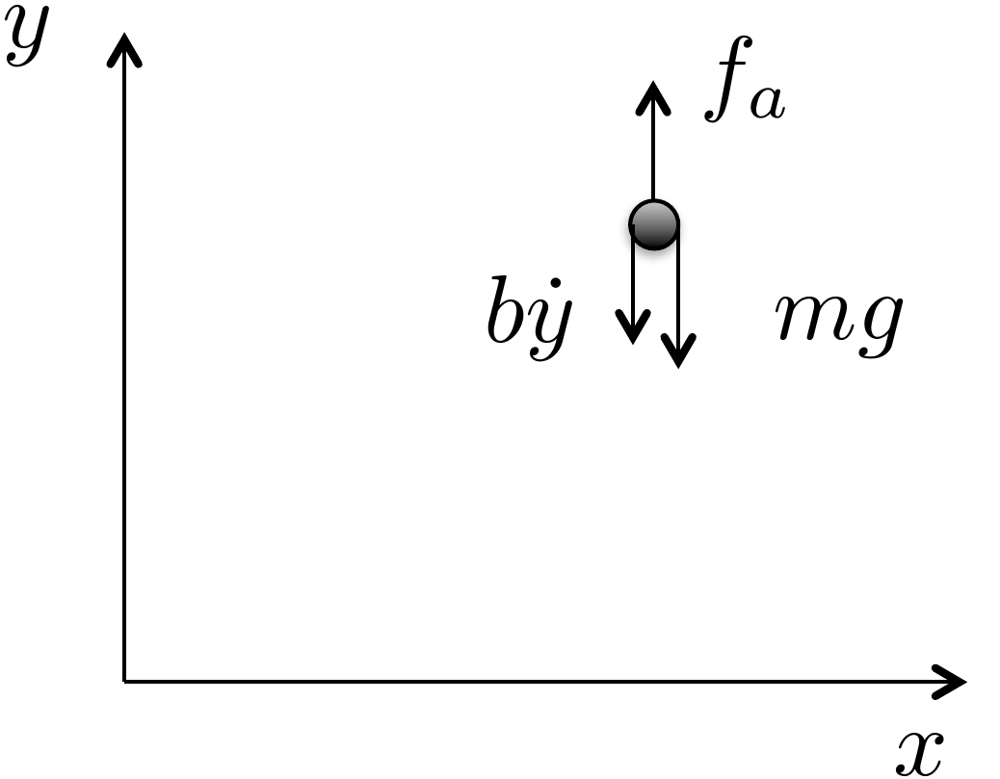
Figure 1.5. Point mass in a gravity
field.
Since all of the forces are in the vertical direction, the motion of
the vehicle can be completely described by the vertical position of
particle \(y(t)\). From Newton’s law,
the equations of motion are \[\tag{1.1}
m\ddot{y} = f_a-mg-b\dot{y},\] where dots over the variable will
be used throughout the book to denote differentiation with respect to
time, i.e., \(\dot{y}\stackrel{\triangle}{=}\frac{dy}{dt}\)
and \(\ddot{y}\stackrel{\triangle}{=}\frac{d^2y}{dt^2}\).
Rearranging 1.1 gives \[\tag{1.2}
m\ddot{y} + mg = f_a -b\dot{y}.\] The kinetic energy for the particle is
given by \(K(\dot{y})=\frac{1}{2}mv^2=\frac{1}{2}m\dot{y}^2\).
The potential energy, which is induced by
gravitational pull proportional to the distance from the center of the
earth, is given by \(P(y)=P_0+mgy\),
where \(P_0\) is the potential energy
of the particle when \(y=0\). Note that
if the velocity \(\dot{y}\) is thought
of as independent of \(y\), then \[\frac{\partial K(\dot{y})}{\partial \dot{y}} =
m\dot{y}\] and \[\frac{d}{dt}\left(\frac{\partial
K(\dot{y})}{\partial \dot{y}}\right) = m\ddot{y}.\] Also note
that \[\frac{\partial P(y)}{\partial y} =
mg.\] Therefore,
Equation 1.2 can be
written as \[\tag{1.3}
\frac{d}{dt}\left(\frac{\partial K(\dot{y})}{\partial \dot{y}}\right) +
\frac{\partial P(y)}{\partial y} = f_a-b\dot{y}.\]
Equation 1.3
is a particular form of the so-called Euler-Lagrange equation. The
generalization to a more complicated system takes the form \[\tag{1.4}
\frac{d}{dt}\left(\frac{\partial K(y,\dot{y})}{\partial
\dot{y}}-\frac{\partial P(y)}{\partial \dot{y}}\right) -
\left(\frac{\partial K(y,\dot{y})}{\partial y} - \frac{\partial
P(y)}{\partial y}\right) = f_a-b\dot{y},\] which reduces to
Equation 1.3
for our particular case since \(K\) is
only a function of \(\dot{y}\). To
simplify the notation, we define the so-called Lagrangian as
\[L(y,\dot{y})\stackrel{\triangle}{=}K(y,\dot{y})-P(y),\]
and write
Equation 1.4
as \[\tag{1.5}
\frac{d}{dt}\left(\frac{\partial L(y,\dot{y})}{\partial \dot{y}}\right)
- \left(\frac{\partial L(y,\dot{y})}{\partial y}\right) =
f_a-b\dot{y}.\] The position of the system can be generalized to
both positions and angles, and the velocity can be generalized to both
linear and angular velocities. Throughout the book we will use the
notation \(\mathbf{q} = (q_1, q_2, \dots,
q_n)^\top\) to denote the general configuration of the mechanical
system that we are modeling. The vector \(\mathbf{q}\) is called the
generalized-coordinate vector. The kinetic energy of
the system is generally a function of both the generalized coordinates
\(\mathbf{q}\) and the generalized
velocity \(\dot{\mathbf{q}}\). Therefore, we denote
the kinetic energy as \(K(\mathbf{q},\dot{\mathbf{q}})\). On the
other hand, in this book we will only consider potential fields that are
conservative and depend only on the configuration variable \(\mathbf{q}\). Under these assumptions, the
general form of the Euler-Lagrange equations is given by \begin{align}
\frac{d}{dt}\left(\frac{\partial
L(\mathbf{q},\dot{\mathbf{q}})}{\partial \dot{q}_1}\right) -
\frac{\partial L(\mathbf{q},\dot{\mathbf{q}})}{\partial q_1} &=
\tau_1-b_{11} \dot{q}_1 - \cdots - b_{1n}\dot{q}_n \notag \\
\frac{d}{dt}\left(\frac{\partial
L(\mathbf{q},\dot{\mathbf{q}})}{\partial \dot{q}_2}\right) -
\frac{\partial L(\mathbf{q},\dot{\mathbf{q}})}{\partial q_2} &=
\tau_2-b_{21} \dot{q}_1 - \cdots - b_{2n}\dot{q}_n
\tag{1.6} \\
\vdots \\
\frac{d}{dt}\left(\frac{\partial
L(\mathbf{q},\dot{\mathbf{q}})}{\partial \dot{q}_n}\right) -
\frac{\partial L(\mathbf{q},\dot{\mathbf{q}})}{\partial q_n} &=
\tau_n-b_{n1} \dot{q}_1 - \cdots - b_{nn}\dot{q}_n, \notag
\end{align} where \(\tau_i\)
are the generalized forces and torques that are applied to the system.
Or in vector form we can write \[\tag{1.8}
\frac{d}{dt}\left(\frac{\partial
L(\mathbf{q},\dot{\mathbf{q}})}{\partial \dot{\mathbf{q}}}\right) -
\frac{\partial L(\mathbf{q},\dot{\mathbf{q}})}{\partial \mathbf{q}} =
\boldsymbol{\tau} -B \dot{\mathbf{q}},\] where \(B\) is a matrix with positive elements and
\(\boldsymbol{\tau}=(\tau_1,\dots,\tau_n)^\top\)
are the generalized forces. The Euler-Lagrange
equation will be discussed in
more detail in
Chapter 6. However, before showing how
to use Equation 1.8
to derive the equations of motion for practical systems, we need to show
how to compute the kinetic and potential energy for general (holonomic)
rigid body systems.
2 Kinetic Energy of Mechanical
Systems
2.1 Theory
Consider a point mass with mass \(m\), traveling at velocity \(\mathbf{v}\), as shown in
Fig.2.1. If the velocity is
resolved with respect to a coordinate axis, then \(\mathbf{v}=(v_x, v_y, v_z)^\top\). The
kinetic energy of the point mass is
given by \[\begin{aligned}
K &= \frac{1}{2} m \left|\mathbf{v}\right|^2 \\
&= \frac{1}{2} m \mathbf{v}^\top \mathbf{v} \\
& = \frac{1}{2} m (v_x^2 + v_y^2 + v_z^2).
\end{aligned}\]
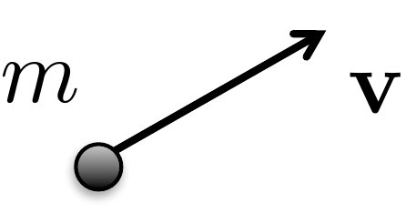
Figure 2.1. Point mass moving at velocity v.
Now consider two point masses as shown in
Fig.2.2.
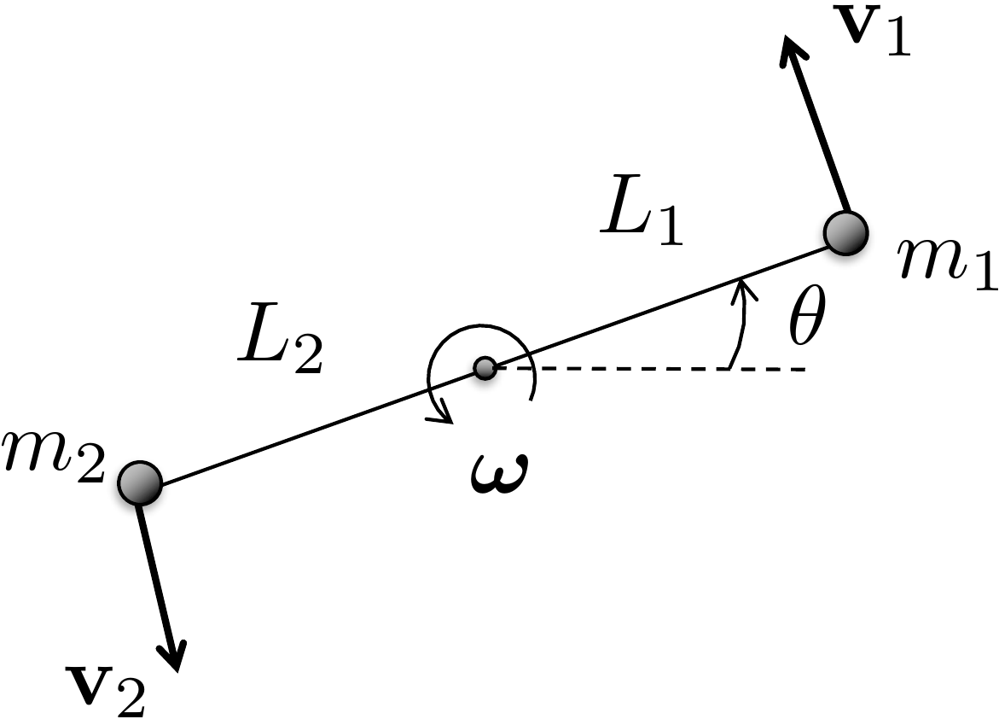
Figure 2.2. Two constrained point masses spinning
about a point on an adjoining axis.
The total kinetic energy of the system is given by summing the
kinetic energy of each of the point masses as \[\tag{2.1}
K = \frac{1}{2} m_1 \mathbf{v}_1^\top \mathbf{v}_1 + \frac{1}{2} m_2
\mathbf{v}_2^\top \mathbf{v}_2.\] If the two masses are connected
by a massless rod and the particles are spinning about a point on the
rod, as shown in
Fig.2.2, where the angular velocity
vector \(\boldsymbol{\omega}\) points
out of the page, and the magnitude is given by \(\dot{\theta}\), i.e., \(\boldsymbol{\omega}=(0, 0,
\dot{\theta})^\top\), then from elementary physics, the velocity
of point \(i\) is given by \[\mathbf{v}_i =
\boldsymbol{\omega}\times\mathbf{p}_i,\] where in our case \(\mathbf{p}_1 = (L_1\cos\theta, L_1\sin\theta,
0)^\top\), and \(\mathbf{p}_2 =
(-L_2\cos\theta, -L_2\sin\theta, 0)^\top\). Therefore \[\begin{aligned}
\mathbf{v}_1 &= \begin{pmatrix} 0 \\ 0 \\
\dot{\theta}\end{pmatrix}\times\begin{pmatrix}L_1\cos\theta \\
L_1\sin\theta \\ 0\end{pmatrix} = \begin{pmatrix}
-L_1\dot{\theta}\sin\theta \\ L_1\dot{\theta}\cos\theta \\ 0
\end{pmatrix} \\
\mathbf{v}_2 &= \begin{pmatrix} 0 \\ 0 \\ \dot{\theta}
\end{pmatrix}\times\begin{pmatrix}-L_2\cos\theta \\ -L_2\sin\theta \\
0\end{pmatrix} = \begin{pmatrix} L_2\dot{\theta}\sin\theta \\
-L_2\dot{\theta}\cos\theta \\ 0 \end{pmatrix}.
\end{aligned}\] An alternative method for computing the
velocities \(\mathbf{v}_1\) and \(\mathbf{v}_2\) is to differentiate \(\mathbf{p}_1\) and \(\mathbf{p}_2\) with respect to time to
obtain \[\begin{aligned}
\mathbf{v}_1 &\stackrel{\triangle}{=}\dot{\mathbf{p}}_1
= \frac{d\mathbf{p}_1}{dt}
= \frac{d}{dt}(L_1\cos\theta, L_1\sin\theta, 0)^\top \\
&=
\begin{pmatrix}-L_1\left(\frac{d\theta}{dt}\right)\sin\theta, &
L_1\left(\frac{d\theta}{dt}\right)\cos\theta, & 0 \end{pmatrix}^\top
\\
&= \begin{pmatrix}-L_1\dot{\theta}\sin\theta, &
L_1\dot{\theta}\cos\theta, & 0 \end{pmatrix}^\top \\
\mathbf{v}_2 &\stackrel{\triangle}{=}\dot{\mathbf{p}}_2
= \frac{d\mathbf{p}_2}{dt}
= \frac{d}{dt}(-L_2\cos\theta, -L_2\sin\theta, 0)^\top \\
&=
\begin{pmatrix}L_2\left(\frac{d\theta}{dt}\right)\sin\theta, &
-L_2\left(\frac{d\theta}{dt}\right)\cos\theta, & 0
\end{pmatrix}^\top \\
&= \begin{pmatrix}L_2\dot{\theta}\sin\theta, &
-L_2\dot{\theta}\cos\theta, & 0 \end{pmatrix}^\top.
\end{aligned}\]
Now consider the case where there are \(N\) point masses spinning about a general
angular velocity vector \(\boldsymbol{\omega}\), where the position
of the \(i^{th}\) point mass, \(i=1,\dots,N\), in a specified coordinate
system is given by \(\mathbf{p}_i\), as
shown in
Fig.2.3.
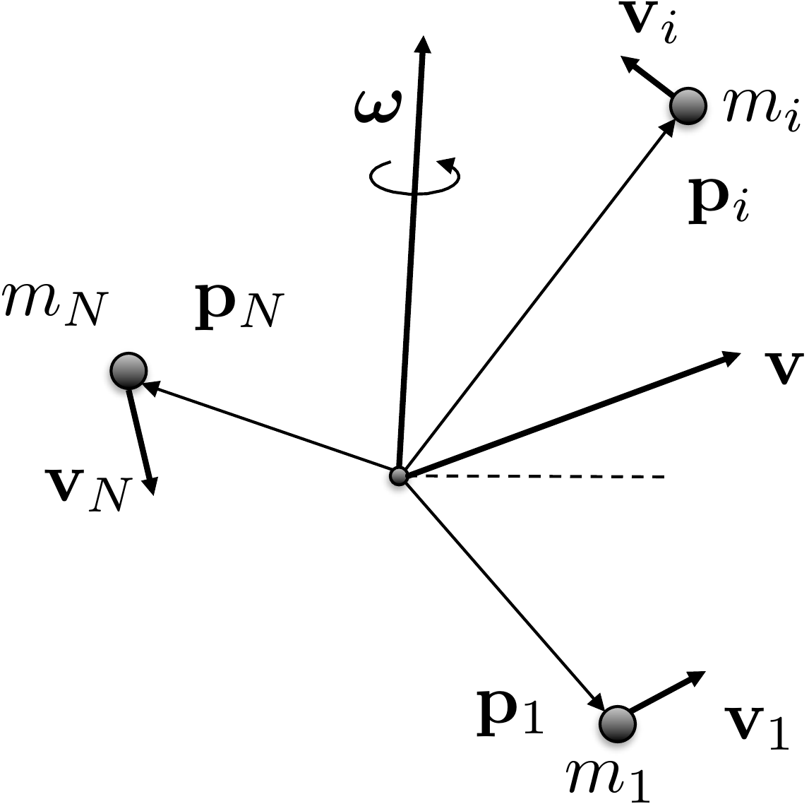
Figure 2.3. Many masses in a rigid body spinning
about a common axis and moving at velocity v.
We will see in the discussion below that it is most convenient to
pick the coordinate system to be at the center of mass. The kinetic
energy of the \(i^{th}\) particle is
\(K_i =
\frac{1}{2}m_i\mathbf{v}_i^\top\mathbf{v}_i\). Therefore, the
kinetic energy of the total system is given by \[K = \sum_{i=1}^N
\frac{1}{2}m_i\mathbf{v}_i^\top\mathbf{v}_i.\] Using the fact
that \(\mathbf{v}_i =
\boldsymbol{\omega}\times\mathbf{p}_i\) gives \[K = \sum_{i=1}^N
\frac{1}{2}m_i\left(\boldsymbol{\omega}\times\mathbf{p}_i\right)^\top\left(\boldsymbol{\omega}\times\mathbf{p}_i\right).\]
Recalling the cross product rule \[(\mathbf{a}\times\mathbf{b})^\top(\mathbf{c}\times\mathbf{d})
=
(\mathbf{a}^\top\mathbf{c})(\mathbf{b}^\top\mathbf{d})-(\mathbf{a}^\top\mathbf{d})(\mathbf{b}^\top\mathbf{c})\]
gives \[\begin{aligned}
K &= \frac{1}{2} \sum_{i=1}^N m_i \left[
(\boldsymbol{\omega}^\top\boldsymbol{\omega})(\mathbf{p}_i^\top\mathbf{p}_i)-(\boldsymbol{\omega}^\top\mathbf{p}_i)(\mathbf{p}_i^\top\boldsymbol{\omega})\right]
\\
&= \frac{1}{2} \sum_{i=1}^N m_i \boldsymbol{\omega}^\top \left[
(\mathbf{p}_i^\top\mathbf{p}_i) I_3 - \mathbf{p}_i \mathbf{p}_i^\top
\right] \boldsymbol{\omega} \\
&= \frac{1}{2} \boldsymbol{\omega}^\top \left[ \sum_{i=1}^N m_i
\left((\mathbf{p}_i^\top\mathbf{p}_i) I_3 - \mathbf{p}_i
\mathbf{p}_i^\top \right) \right] \boldsymbol{\omega} \\
&\stackrel{\triangle}{=}\frac{1}{2} \boldsymbol{\omega}^\top J
\boldsymbol{\omega}.
\end{aligned}\] where \(I_3\) is
the \(3 \times 3\) identity matrix. The
matrix \[J = \sum_{i=1}^N m_i
\left((\mathbf{p}_i^\top\mathbf{p}_i) I_3 - \mathbf{p}_i
\mathbf{p}_i^\top \right)\] is called the inertia matrix of the
mass system. If the mass system is solid then there is an infinite
number of particles, and the sum becomes an integral resulting in \[J = \int_{\mathbf{p}\in\text{body}}
\left((\mathbf{p}^\top\mathbf{p}) I_3 - \mathbf{p} \mathbf{p}^\top
\right)dm(\mathbf{p}),\] where \(dm(\mathbf{p})\) is the elemental mass
located at position \(\mathbf{p}\) and
the integral is over all elemental masses in the system.
Suppose that \(\mathbf{p}=(x, y,
z)^\top\) is expressed with respect to a coordinate system fixed
in a rigid body. Then \[\begin{aligned}
J &= \int_{(x,y,z)\in\text{body}} \Bigg[ \begin{pmatrix} x & y
& z \end{pmatrix}\begin{pmatrix} x \\ y \\ z \end{pmatrix}
\begin{pmatrix} 1 & 0 & 0 \\ 0 & 1 & 0 \\ 0 & 0
& 1 \end{pmatrix}
%
- \begin{pmatrix} x \\ y \\ z \end{pmatrix} \begin{pmatrix} x &
y & z \end{pmatrix} \Bigg] dm(x,y,z) \\
&= \int_{(x,y,z)\in\text{body}} \Bigg[ (x^2 + y^2 +
z^2)\begin{pmatrix} 1 & 0 & 0 \\ 0 & 1 & 0 \\ 0 & 0
& 1 \end{pmatrix}
%
- \begin{pmatrix} x^2 & xy & x z \\ yx & y^2 & yz \\
zx & zy & z^2 \end{pmatrix} \Bigg] dm(x,y,z) \\
&= \int_{(x,y,z)\in\text{body}} \begin{pmatrix} y^2 + z^2 & -xy
& -x z \\ -yx & x^2+z^2 & -yz \\ -zx & -zy & x^2+y^2
\end{pmatrix} dm(x,y,z).
\end{aligned}\]
As an example, to compute the inertia matrix of the thin rod of mass
\(m\) about its center of mass, as
shown in
Fig.2.4, the first step is to define a
coordinate system at the center of mass, as shown in
Fig.2.4, where \(\hat{i}\) and \(\hat{j}\) are orthogonal unit vectors
pointing parallel and perpendicular to the rod, respectively. The unit
vector \(\hat{k}\) forms a right-handed
coordinate system and points out of the page.
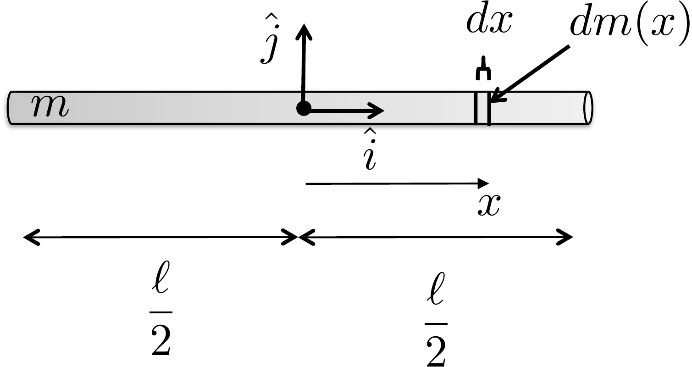
Figure 2.4. Computing the inertia of a thin
rod.
Assuming that the rod is infinitely thin and that the mass is evenly
distributed throughout the rod, then the elemental mass is given by
\[dm(x) = \frac{m}{\ell}dx.\] Since
the rod is infinitely thin in the \(\hat{j}\) and \(\hat{k}\) directions, the inertia matrix is
given by \begin{align}
J &= \int_{x=-\ell/2}^{\ell/2}\int_{y=0}^0\int_{z=0}^0
\begin{pmatrix} y^2 + z^2 & -xy & -x z \\ -yx & x^2+z^2
& -yz \\ -zx & -zy & x^2+y^2 \end{pmatrix} dz \, dy \,
\frac{m}{\ell}dx \notag\\
&= \frac{m}{\ell} \int_{x=-\ell/2}^{\ell/2} \begin{pmatrix} 0
& 0 & 0 \\ 0 & x^2 & 0 \\ 0 & 0 & x^2
\end{pmatrix} dx \notag\\
&= \frac{m}{\ell} \begin{pmatrix} 0 & 0 & 0 \\ 0 &
\frac{x^3}{3}\big|_{x=-\frac{\ell}{2}}^{\frac{\ell}{2}} & 0 \\ 0
& 0 & \frac{x^3}{3}\big|_{x=-\frac{\ell}{2}}^{\frac{\ell}{2}}
\end{pmatrix}
= \begin{pmatrix} 0 & 0 & 0 \\ 0 &
\frac{m\ell^2}{12} & 0 \\ 0 & 0 & \frac{m\ell^2}{12}
\end{pmatrix}. \tag{2.2}
\end{align} Note that the infinitely thin rod assumption
implies that there is only inertia, or rotational mass, about the \(\hat{j}\) and \(\hat{k}\) axes.
As another example, to compute the inertia matrix of the thin plate
of mass \(m\) about its center of mass,
as shown in
Fig.2.5, the first step is to define
a coordinate system at the center of mass, as shown in
Fig.2.5, where \(\hat{i}\) and \(\hat{j}\) are orthogonal unit vectors
pointing along the length and width of the plate, respectively, and
\(\hat{k}\) forms a right-handed
coordinate system and points perpendicular to the plate.
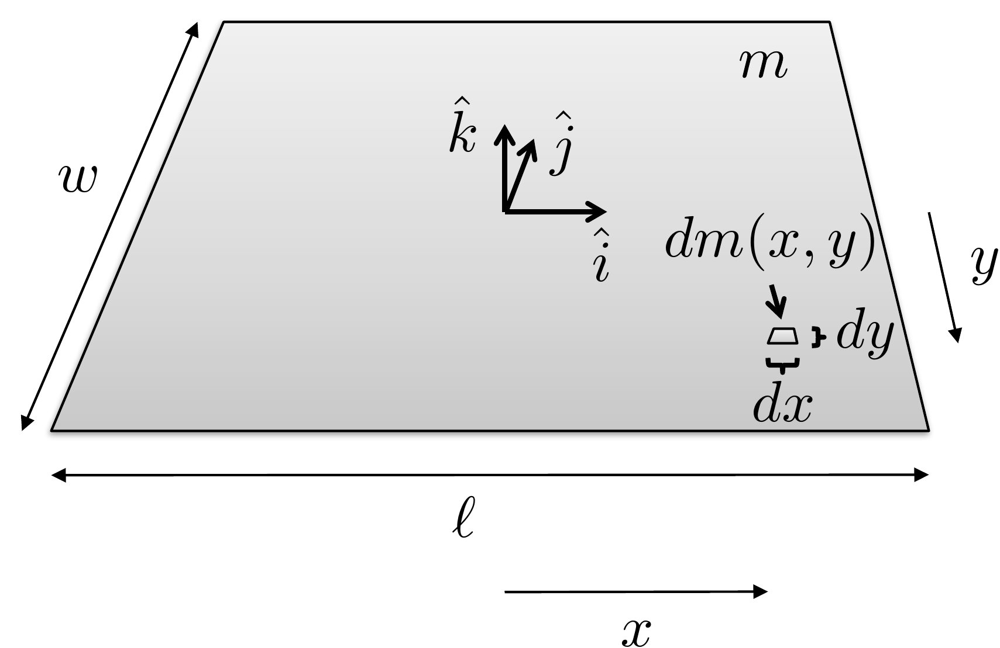
Figure 2.5. Computing the inertia of a thin
plate.
Assuming that the plate is infinitely thin, and that the mass is
evenly distributed throughout the plate, then the elemental mass is
given by \[dm(x,y) = \frac{m}{\ell
w}dx\,dy.\] Since the plate is infinitely thin in the \(\hat{k}\) direction, the inertia matrix is
given by \[\begin{aligned}
J &= \int_{x=-\ell/2}^{\ell/2}\int_{y=-w/2}^{w/2}\int_{z=0}^0
\begin{pmatrix} y^2 + z^2 & -xy & -x z \\ -yx & x^2+z^2
& -yz \\ -zx & -zy & x^2+y^2 \end{pmatrix} dz \, dy \,
\frac{m}{\ell w}\,dx \\
&= \frac{m}{\ell w} \int_{x=-\ell/2}^{\ell/2}
\int_{y=-w/2}^{w/2} \begin{pmatrix} y^2 & -xy & 0 \\ -yx &
x^2 & 0 \\ 0 & 0 & x^2 +y^2\end{pmatrix} dy\,dx \\
%
&= \frac{m}{\ell w} \int_{x=-\ell/2}^{\ell/2} \begin{pmatrix}
\frac{w^3}{12} & 0 & 0 \\ 0 & x^2 w & 0 \\ 0 & 0
& x^2 w +\frac{w^3}{12}\end{pmatrix} dx \\
%
&= \frac{m}{\ell w} \begin{pmatrix} \frac{w^3}{12}\ell & 0
& 0 \\ 0 & \frac{\ell^3}{12} w & 0 \\ 0 & 0 &
\frac{\ell^3}{12}w +\frac{w^3}{12}\ell\end{pmatrix}
= \begin{pmatrix} \frac{mw^2}{12} & 0 & 0 \\ 0 &
\frac{m\ell^2}{12} & 0 \\ 0 & 0 & \frac{m\ell^2}{12}
+\frac{mw^2}{12}\end{pmatrix}.
\end{aligned}\]
The diagonal elements of \(J\) are
called the moments of inertia and represent the
rotational mass about the \(\hat{i}\),
\(\hat{j}\), and \(\hat{k}\) axes respectively.
We have shown that if the motion of the system of \(N\) masses is caused purely by spinning
about the angular velocity vector \(\boldsymbol{\omega}\), then the kinetic
energy is given by \(K=\frac{1}{2}\boldsymbol{\omega}^\top J
\boldsymbol{\omega}\). If the system of masses is also
translating with velocity \(\mathbf{v}\), then the velocity of the
\(i^{th}\) particle is given by \(\mathbf{v}_i = \mathbf{v} +
\boldsymbol{\omega}\times\mathbf{p}_i.\) In that case, the
kinetic energy is given by \[\begin{aligned}
K &= \frac{1}{2}\sum_{i=1}^N m_i \mathbf{v}_i^\top\mathbf{v}_i
= \frac{1}{2}\sum_{i=1}^N m_i (\mathbf{v} +
\boldsymbol{\omega}\times\mathbf{p}_i)^\top(\mathbf{v} +
\boldsymbol{\omega}\times\mathbf{p}_i) \\
&= \frac{1}{2}\sum_{i=1}^N m_i \Big(\mathbf{v}^\top\mathbf{v} +
\mathbf{v}^\top(\boldsymbol{\omega}\times\mathbf{p}_i)+(\boldsymbol{\omega}\times\mathbf{p}_i)^\top\mathbf{v}
%
+
(\boldsymbol{\omega}\times\mathbf{p}_i)^\top(\boldsymbol{\omega}\times\mathbf{p}_i)
\Big) \\
&= \frac{1}{2}\left(\sum_{i=1}^N m_i\right)\mathbf{v}^\top\mathbf{v}
+ \frac{1}{2} \sum_{i=1}^N m_i
(\boldsymbol{\omega}\times\mathbf{p}_i)^\top(\boldsymbol{\omega}\times\mathbf{p}_i)
\\ &\qquad\qquad
+ \frac{1}{2}\sum_{i=1}^N
m_i\left[\mathbf{v}^\top(\boldsymbol{\omega}\times\mathbf{p}_i) +
(\boldsymbol{\omega}\times\mathbf{p}_i)^\top\mathbf{v}\right].
\end{aligned}\] Using the cross product property \[\mathbf{a}^\top(\mathbf{b}\times\mathbf{c}) =
\mathbf{b}^\top(\mathbf{c}\times\mathbf{a}) =
\mathbf{c}^\top(\mathbf{a}\times\mathbf{b})\] we get that \[\begin{gathered}
\sum_{i=1}^N
m_i\left[\mathbf{v}^\top(\boldsymbol{\omega}\times\mathbf{p}_i) +
(\boldsymbol{\omega}\times\mathbf{p}_i)^\top\mathbf{v}\right] =
\\
(\sum_{i=1}^N m_i\mathbf{p}_i)^\top(\mathbf{v}\times\boldsymbol{\omega})
+ (\sum_{i=1}^N
m_i\mathbf{p}_i)^\top(\mathbf{v}\times\boldsymbol{\omega}).
\end{gathered}\] If we choose the center of the coordinate system
to be the center of mass, then \(\sum_{i=1}^N
m_i\mathbf{p}_i=0\). Defining the total mass as \(m=\sum_{i=1}^N m_i\), the kinetic energy is
given by \[\begin{aligned}
K&= \frac{1}{2}\left(\sum_{i=1}^N
m_i\right)\mathbf{v}_{cm}^\top\mathbf{v}_{cm} + \frac{1}{2} \sum_{i=1}^N
m_i
(\boldsymbol{\omega}\times\mathbf{p}_i)^\top(\boldsymbol{\omega}\times\mathbf{p}_i) \notag
\\
&= \frac{1}{2}m\mathbf{v}_{cm}^\top\mathbf{v}_{cm}
+ \frac{1}{2} \boldsymbol{\omega}^\top J_{cm} \boldsymbol{\omega}.
\end{aligned}\]
Therefore, the kinetic energy of a rigid body moving with velocity
\(\mathbf{v}_{cm}\) and spinning at
angular velocity \(\boldsymbol{\omega}\) is \[\tag{2.3}
K=\frac{1}{2}m\mathbf{v}_{cm}^\top\mathbf{v}_{cm}
+ \frac{1}{2} \boldsymbol{\omega}^\top J_{cm}
\boldsymbol{\omega}.\] If the system consists of \(n\) rigid bodies, then the total kinetic
energy is computed by summing the kinetic energy for each body as \[K = \sum_{j=1}^n
\left[\frac{1}{2}m_j\mathbf{v}_{cm,j}^\top\mathbf{v}_{cm,j}
+ \frac{1}{2} \boldsymbol{\omega}_j^\top J_{cm,j}
\boldsymbol{\omega}_j\right].\]
2.1.1 Example: Mass Spring
System
As an example, consider the mass spring system shown in
Fig.2.6 where two masses are
moving along a surface and are connected by springs with constants \(k_1\) and \(k_2\) and dampers with constants \(b_1\) and \(b_2\). The kinetic energy of the system is
determined by the velocity of the two masses and is therefore given by
\[K = \frac{1}{2} m_1 \dot{z}_1^2 +
\frac{1}{2} m_2 \dot{z}_2^2.\]
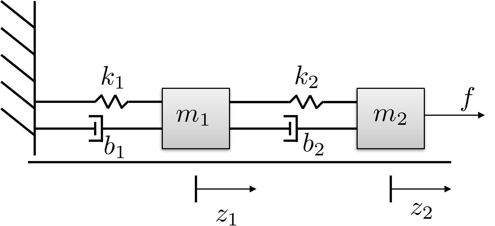
Figure 2.6. Mass spring system with two masses
connected by springs and dampers.
2.1.2 Example: Spinning
Dumbbell
As another simple example, consider the spinning dumbbell system
shown in
Fig.2.7, where two masses are
spinning about a point on the adjoining line between the masses. The
angular velocity vector is pointing out of the page with magnitude \(\dot{\theta}\) and the dumbbell system is
moving to the right at velocity \(\dot{z}\).
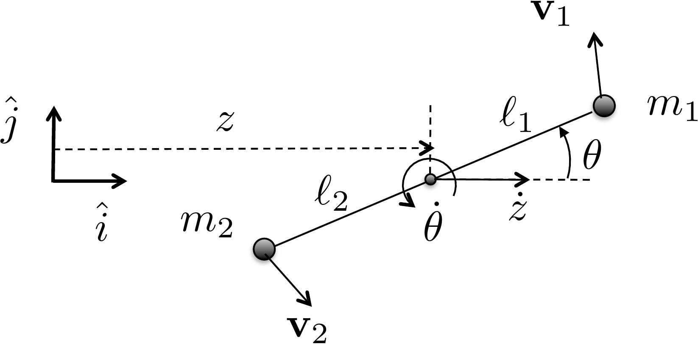
Figure 2.7. Spinning dumbbell. The system is spinning
about the axis pointing out of the page and moving to the right at
velocity ż.
The first step in computing the kinetic energy is to define an
inertial coordinate system as shown in
Fig.2.7 where \(\hat{i}\) is a unit vector along the
direction of travel, \(\hat{j}\) is
perpendicular to the direction of travel, and where \(\hat{k}\) forms a right-handed coordinate
system and points out of the page. In this coordinate system, the
position of the point of rotation is given by \(\mathbf{p}(t)=(z(t), 0, 0)^\top\).
Accordingly, the positions of \(m_1\)
and \(m_2\) are given by \[\begin{aligned}
\mathbf{p}_1(t) &= (z(t)+\ell_1\cos\theta(t), \ell_1\sin\theta(t),
0)^\top, \\
\mathbf{p}_2(t) &= (z(t)-\ell_2\cos\theta(t), -\ell_2\sin\theta(t),
0)^\top.
\end{aligned}\] Since \(z\) and
\(\theta\) are functions of time, using
the chain rule \[\frac{d}{dt}f(g(t)) =
\frac{\partial f}{\partial g}\frac{d g}{dt}\] and differentiating
with respect to time, we get the velocities of the masses as \[\begin{aligned}
\mathbf{v}_1 &= (\dot{z} - \ell_1\dot{\theta}\sin\theta,
\ell_1\dot{\theta}\cos\theta, 0)^\top,\\
\mathbf{v}_2 &= (\dot{z} + \ell_2\dot{\theta}\sin\theta,
-\ell_2\dot{\theta}\cos\theta, 0)^\top.
\end{aligned}\] The kinetic energy is therefore given by \[\begin{aligned}
K &= \frac{1}{2}m_1\mathbf{v}_1^\top \mathbf{v}_1 +
\frac{1}{2}m_2\mathbf{v}_2^\top \mathbf{v}_2 \\
&= \frac{1}{2}m_1 \left[(\dot{z} - \ell_1\dot{\theta}\sin\theta)^2 +
(\ell_1\dot{\theta}\cos\theta)^2 \right]
\\&\qquad
+ \frac{1}{2}m_2\left[(\dot{z} + \ell_2\dot{\theta}\sin\theta)^2 +
(-\ell_2\dot{\theta}\cos\theta)^2 \right] \\
&= \frac{1}{2}m_1 \left[\dot{z}^2 -
2\ell_1\dot{z}\dot{\theta}\sin\theta +
\ell_1^2\dot{\theta}^2\sin^2\theta+\ell_1^2\dot{\theta}^2\cos^2\theta
\right]
\\ &\quad
+ \frac{1}{2}m_2\left[\dot{z}^2 +
2\ell_2\dot{z}\dot{\theta}\sin\theta +
\ell_2^2\dot{\theta}^2\sin^2\theta+\ell_2^2\dot{\theta}^2\cos^2\theta
\right] \\
&= \frac{1}{2}(m_1+m_2)\dot{z}^2 + \frac{1}{2}
(m_1\ell_1^2+m_2\ell_2^2)\dot{\theta}^2 +
(m_2\ell_2-m_1\ell_1)\dot{z}\dot{\theta}\sin\theta.
\end{aligned}\] Note that if the pivot point is located at the
center of mass, then \(m_1\ell_1=m_2\ell_2\), and the kinetic
energy is simply given by \[K =
\frac{1}{2}(m_1+m_2)\dot{z}^2 + \frac{1}{2}
(m_1\ell_1^2+m_2\ell_2^2)\dot{\theta}^2,\] which is in the form
\[K =
\frac{1}{2}m\mathbf{v}_{cm}^\top\mathbf{v}_{cm} +
\frac{1}{2}\boldsymbol{\omega}^\top J \boldsymbol{\omega},\]
where the total mass is \(m=m_1+m_2\),
the velocity of the center of mass is \(\mathbf{v}_{cm}=(\dot{z}, 0, 0)^\top\), the
angular velocity vector is \(\boldsymbol{\omega} = (0, 0,
\dot{\theta})^\top\) and the \((3,3)\) element of \(J\) is given by \(J_z = m_1\ell_1^2 + m_2\ell_2^2\).
(a) Using the configuration variable \(\theta\), write an expression for the
kinetic energy of the system.
(b) Referring to Appendices P.1, P.2, and P.3, write
a Python or MATLAB class, or a MATLAB function that creates an animation
of the single-link robot arm. Simulate the animation to display a
sinusoidal variation on the configuration variable \(q=\theta\).
Design Study A guided exercise
Derive the arm kinetic energy
Work from the
center-of-mass motion and the rotational inertia of the slender
link.
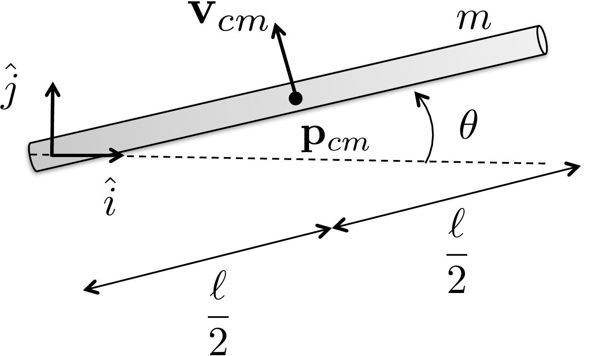
Use this geometry to identify the
center-of-mass position and the angular velocity before deriving kinetic
energy.
Step 1. Center-of-mass position
Enter the horizontal
and vertical components of \(p_{cm}\).
The complete solution includes an animation
class and a simulation script. Before opening it, outline each component
separately.
These prompts are
ungraded. They are intended to connect the derivation to the
implementation code in the complete solution.
Complete solution
Figure 2.8. Single link robot arm. Compute the
velocity of the center of mass and the angular velocity about the center
of mass.
The first step is to define an inertial coordinate system as shown in
Figure 2.8. If the pivot point
is the origin of the coordinate system as shown in Figure 2.8, then the position of
the center of mass is \[\mathbf{p}_{cm}(t) =
\begin{pmatrix} \frac{\ell}{2}\cos\theta(t) \\
\frac{\ell}{2}\sin\theta(t) \\ 0 \end{pmatrix}.\] Differentiating
to obtain the velocity we get \[\mathbf{v}_{cm} = \frac{\ell}{2}\dot{\theta}
\begin{pmatrix} -\sin\theta \\ \cos\theta \\ 0 \end{pmatrix}.\]
The angular velocity about the center of mass is given by \[\boldsymbol{\omega} = \begin{pmatrix} 0 \\ 0 \\
\dot{\theta} \end{pmatrix}.\] Observe that \[\boldsymbol{\omega}^\top J \boldsymbol{\omega} =
\begin{pmatrix} 0 & 0 & \dot{\theta}\end{pmatrix}
\begin{pmatrix} J_x & -J_{xy} & -J_{xz} \\ -J_{xy} & J_y
& -J_{yz} \\ -J_{xz} & -J_{yz} & J_z \end{pmatrix}
\begin{pmatrix} 0 \\ 0 \\ \dot{\theta} \end{pmatrix} = J_z
\dot{\theta}^2,\] therefore we only need the moment of inertia
about the \(\hat{k}\) axis \(J_z\). From the inertia matrix for a thin
rod given in Equation 2.2, we
have that \(J_z=\frac{m\ell^2}{12}\).
Therefore, the kinetic energy of the single-link robot arm is \[\begin{aligned}
K &= \frac{1}{2} m \mathbf{v}_{cm}^\top \mathbf{v}_{cm} +
\frac{1}{2}\boldsymbol{\omega}^\top J_{cm} \boldsymbol{\omega} \\
&= \frac{1}{2} m \frac{\ell^2}{4}\dot{\theta}^2(\sin^2\theta +
\cos^2\theta) + \frac{1}{2}\dot{\theta}^2\frac{m\ell^2}{12} \\
&=\frac{1}{2}\frac{m\ell^2}{3}\dot{\theta}^2.
\end{aligned}\]
Throughout the book, we will demonstrate how to simulate the single
link robot arm using Python object-oriented code. The Python class that
animates the single link robot arm is shown below.
# 3rd-partyimport numpy as np# local (controlbook)from ..common.animator import MatplotlibAxisAnimatorclass ArmAnimator(MatplotlibAxisAnimator):""" By inheriting from MatplotlibAxisAnimator, this class has access to the matplotlib axis object via `self.ax`. This class just needs to implement the `setup_background()`, `setup_changing_objects()`, and `update_changing_objects()` methods. """def setup_background(self):self.length =1.0 lim =self.length *1.25self.ax.axis((-lim, lim, -lim, lim))self.ax.set_aspect("equal", "box") (baseline,) =self.ax.plot([0, self.length], [0, 0], "k--")def setup_changing_objects(self, x0, r0): theta0 = x0[0] x, y =self.get_arm_endpoints(theta0) (self.arm_line,) =self.ax.plot(x, y, linewidth=5, color="blue")def update_changing_objects(self, x, r): theta = x[0] x, y =self.get_arm_endpoints(theta)self.arm_line.set_xdata(x)self.arm_line.set_ydata(y)return (self.arm_line,)def get_arm_endpoints(self, theta): x = np.array([0, self.length * np.cos(theta)]) y = np.array([0, self.length * np.sin(theta)])return x, y
The Python code that implements the animation is given below.
# 3rd-partyimport numpy as np# local (controlbook)import case_studies.A_arm.params as Pfrom case_studies.A_arm.visualizer import ArmVisualizerfrom case_studies.common.signal_generator import SignalGenerator# initialize signals for generating datatheta_gen = SignalGenerator(amplitude=np.pi, frequency=0.1)tau_gen = SignalGenerator(amplitude=5, frequency=0.5)# initialize data storagex0 = np.zeros(2)x_hist = [x0]u_hist = []# loop over timetime = np.arange(start=0, stop=20, step=P.ts, dtype=np.float64)for t in time[1:]:# generate fake state and input data x = np.empty(2) x[0] = theta_gen.sin(t) x[1] = theta_gen.random(t) # velocity info can be anything for animation# inputs can be anything for animation u = np.array([tau_gen.sawtooth(t)])# store data for visualization x_hist.append(x) u_hist.append(u)# convert data to numpy arraysx_hist = np.array(x_hist)u_hist = np.array(u_hist)# visualize generated dataviz = ArmVisualizer(time, x_hist, u_hist)viz.animate() # may need to play with arguments to achieve desired animation speed
Complete simulation code for MATLAB, Python, and Simulink can be
downloaded at http://controlbook.byu.edu.
(a) Using the configuration variables \(z\)
and \(\theta\), write an expression for
the kinetic energy of the system.
(b) Referring to Appendices P.1, P.2, and P.3, write
a Python or MATLAB class, or a MATLAB function that creates an animation
of the inverted pendulum. Simulate the animation to display sinusoidal
variations on the configuration variables \(q=(z, \theta)^\top\).
Design
Study B guided exercise
Build the pendulum kinetic
energy
Use the geometry to identify positions, velocities,
and energy terms for the cart and rod.
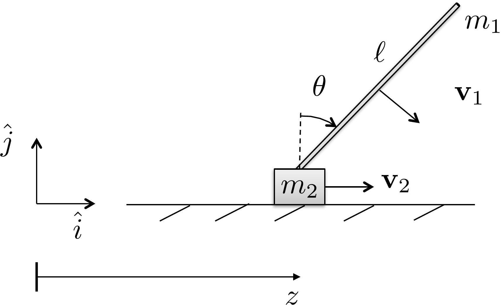
Use this geometry to identify the cart
position, rod center-of-mass position, and pendulum angular
velocity.
Step 1. Position variables
Show solution for Step
1
Answer: The rod center of mass
can be written as \(p_{cm}=(z+\ell/2\sin\theta,\;\ell/2\cos\theta)\); the
cart position is \(z\).
Step 2. Velocity variables
Show solution for Step
2
Answer: The rod velocity depends
on both cart translation and pendulum rotation; the cart velocity is
zdot.
Step 3.
Energy terms
Show solution for Step
3
Answer: The kinetic energy
combines cart translational energy, rod translational energy, and rod
rotational energy.
Pseudocode
The complete solution includes an animation
class and a simulation script. Before opening it, outline each component
separately.
These prompts are
ungraded. They are intended to connect the derivation to the
implementation code in the complete solution.
Complete solution
Figure 2.9. Pendulum on a cart. Compute the velocity
of the pendulum and of the cart.
Define the inertial coordinate frame as in Figure 2.9, with \(\hat{k}\) out of the page. The position of
the center of mass of the rod with mass \(m_1\) is given by \[\mathbf{p}_1 = \begin{pmatrix} z(t) +
\frac{\ell}{2} \sin\theta(t) \\ \frac{\ell}{2} \cos\theta(t) \\ 0
\end{pmatrix},\] and the horizontal position of the cart with
mass \(m_2\) is given by \[\mathbf{p}_2 = \begin{pmatrix} z(t) \\ 0 \\ 0
\end{pmatrix}.\] Differentiating to obtain the velocities of
\(m_1\) and \(m_2\) we obtain \[\begin{aligned}
\mathbf{v}_1 = \begin{pmatrix} \dot{z} +
\frac{\ell}{2}\dot{\theta}\cos\theta \\
-\frac{\ell}{2}\dot{\theta}\sin\theta \\ 0 \end{pmatrix}, \qquad\qquad
\mathbf{v}_2 = \begin{pmatrix} \dot{z} \\ 0 \\ 0 \end{pmatrix}.
\end{aligned}\] We are modeling the cart as a point mass and the
rod as being infinitely thin. Therefore, the kinetic energy of the rod
is the summation of its translational and rotational kinetic energy
about the center of mass. The total kinetic energy of the system is
given by \begin{align}
K &= \frac{1}{2} m_1 \mathbf{v}_1^\top \mathbf{v}_1 + \frac{1}{2}
\boldsymbol{\omega}^\top J_{rod,cm} \boldsymbol{\omega} +
\frac{1}{2}m_2\mathbf{v}_2^\top \mathbf{v}_2 \notag\\
&= \frac{1}{2} m_1 \left[ (\dot{z} +
\frac{\ell}{2}\dot{\theta}\cos\theta)^2 +
(-\frac{\ell}{2}\dot{\theta}\sin\theta)^2 \right]
+ \frac{1}{2}\dot{\theta}^2 \frac{m_1 \ell^2}{12}
+ \frac{1}{2}m_2\dot{z}^2 \notag\\
&= \frac{1}{2} m_1 \left[ \dot{z}^2 +
2\frac{\ell}{2}\dot{z}\dot{\theta}\cos\theta +
\frac{\ell^2}{4}\dot{\theta}^2\cos^2\theta +
\frac{\ell^2}{4}\dot{\theta}^2\sin^2\theta \right] \notag
\\&\qquad
+ \frac{1}{2}\dot{\theta}^2 \frac{m_1 \ell^2}{12} +
\frac{1}{2}m_2\dot{z}^2 \notag\\
&= \frac{1}{2}(m_1+m_2)\dot{z}^2 +
\frac{1}{2}m_1\frac{\ell^2}{3}\dot{\theta}^2 +
m_1\frac{\ell}{2}\dot{z}\dot{\theta}\cos\theta.
\tag{2.4}
\end{align}
Throughout the book, we will demonstrate how to simulate the pendulum
on a cart using Python code. The Python class that animates the system
is shown below.
The Python code that implements the animation functionality is given
below.
# 3rd-partyimport numpy as np# local (controlbook)import case_studies.B_pendulum.params as Pfrom case_studies.B_pendulum.visualizer import CartPendulumVisualizerfrom case_studies.common.signal_generator import SignalGenerator# initialize signals for generating dataz_gen = SignalGenerator(amplitude=0.5, frequency=0.1)theta_gen = SignalGenerator(amplitude=np.radians(45), frequency=0.5)f_gen = SignalGenerator(amplitude=5.0, frequency=0.5)# initialize data storagex0 = np.array([P.z0, P.theta0, P.zdot0, P.thetadot0])x_hist = [x0]u_hist = []# loop over timetime = np.arange(start=0, stop=20, step=P.ts, dtype=np.float64)for t in time[1:]:# generate fake state and input data x = np.empty_like(x0) x[0] = z_gen.sin(t) x[1] = theta_gen.sin(t) x[2] = z_gen.sawtooth(t) # velocity info can be anything for animation x[3] = theta_gen.sawtooth(t) # velocity info can be anything for animation# inputs can be anything for animation u = np.array([f_gen.square(t)])# store data for visualization x_hist.append(x) u_hist.append(u)# convert data to numpy arraysx_hist = np.array(x_hist)u_hist = np.array(u_hist)# visualize generated dataviz = CartPendulumVisualizer(time, x_hist, u_hist)viz.animate() # may need to play with arguments to achieve desired animation speed
Complete simulation code for MATLAB, Python, and Simulink can be
downloaded at http://controlbook.byu.edu.
(a) Using the configuration variables \(\theta\) and \(\phi\), write an expression for the kinetic
energy of the system.
(b) Referring to Appendices P.1, P.2, and P.3, write
a Python or MATLAB class, or a MATLAB function that creates an animation
of the satellite. Simulate the animation to display sinusoidal
variations on the configuration variables \(q=(\theta, \phi)^\top\).
Design Study C guided exercise
Build the satellite kinetic energy
The satellite model
has two rotational inertias: the body inertia \(J_s\) associated with \(\theta\), and the panel inertia \(J_p\) associated with \(\phi\).
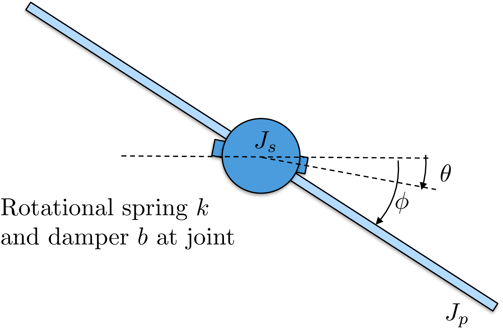
Use
inertial angular rates for kinetic energy. The relative deflection
\(\phi-\theta\) appears in spring
and damping terms later.
Step 1. Match inertias to coordinates
Show solution for Step
1
Answer:\(J_s\) multiplies \(\dot{\theta}^2\), and \(J_p\) multiplies \(\dot{\phi}^2\).
Step 2.
Identify the kinetic-energy terms
Show solution for Step
2
Answer: There are two rotational
kinetic-energy terms. The relative rate \(\dot{\phi}-\dot{\theta}\) is important for damping,
but it is not used as a replacement for the inertial panel kinetic
energy.
The complete solution includes satellite
animation code. Before opening it, outline how an animation should
update the body and panel orientations from \(\theta(t)\) and \(\phi(t)\).
This prompt
is ungraded. It connects the energy model to the animation code in the
complete solution.
Complete solution
Since the satellite consists of two rotational masses, the kinetic
energy is the sum of the rotational kinetic energy of each mass.
Therefore, the kinetic energy is given by \[\tag{2.5}
K = \frac{1}{2} J_s \dot{\theta}^2 + \frac{1}{2} J_p
\dot{\phi}^2.\]
Throughout the book, we will demonstrate how to simulate the
satellite using Python code. The code that animates the satellite and
implements the animation is given below.
# 3rd-partyimport numpy as npimport matplotlib.patches as mpatches# local (controlbook)from ..common.animator import MatplotlibAxisAnimatorclass SatelliteAnimator(MatplotlibAxisAnimator):def setup_background(self):self.length =1.0self.width =0.3 span =self.length *2 (horizontal_line,) =self.ax.plot([-span, span], [0, 0], "k--")self.ax.set_aspect("equal", "box")self.ax.set_xlim(-span, span)self.ax.set_ylim(-span, span)# define points for custom polygon shape for the satellite baseself.base_pts = np.array( [ [self.width /2.0, -self.width /2.0], [self.width /2.0, -self.width /6.0], [self.width /2.0+self.width /6.0, -self.width /6.0], [self.width /2.0+self.width /6.0, self.width /6.0], [self.width /2.0, self.width /6.0], [self.width /2.0, self.width /2.0], [-self.width /2.0, self.width /2.0], [-self.width /2.0, self.width /6.0], [-self.width /2.0-self.width /6.0, self.width /6.0], [-self.width /2.0-self.width /6.0, -self.width /6.0], [-self.width /2.0, -self.width /6.0], [-self.width /2.0, -self.width /2.0], ] ).T# define points for the satellite panelsself.panel_pts = np.array([[-self.length, self.length], [0.0, 0.0]])def setup_changing_objects(self, x0, r0): theta0, phi0 = x0[:2]# create the base of the satelliteself.base = mpatches.Polygon( xy=self.get_base_xy(theta0), facecolor="blue", edgecolor="black", )self.ax.add_patch(self.base)# create the satellite panels x, y =self.get_panel_data(phi0) (self.panel,) =self.ax.plot(x, y, lw=4, c="green")def update_changing_objects(self, x, r): theta, phi = x[:2]self.base.set_xy(self.get_base_xy(theta))self.panel.set_data(self.get_panel_data(phi))return (self.base, self.panel)def get_base_xy(self, theta):""" Return the base coordinates of the satellite in the rotated frame. """ R =self.get_rotation_matrix(theta) rotated_base_pts = R @self.base_ptsreturn rotated_base_pts.Tdef get_panel_data(self, phi):""" Return the panel coordinates of the satellite in the rotated frame. """ R =self.get_rotation_matrix(phi) rotated_panel_pts = R @self.panel_pts x, y = rotated_panel_ptsreturn x, ydef get_rotation_matrix(self, angle):""" Return the 2D rotation matrix for a given angle in radians. Note that the minus sign is used on the lower left sin term because theta and phi are defined as positive angles in the clockwise direction. """ c = np.cos(angle) s = np.sin(angle)return np.array([[c, s], [-s, c]])
The Python code that implements the animation is given below.
# 3rd-partyimport numpy as np# local (controlbook)import case_studies.C_satellite.params as Pfrom case_studies.C_satellite.visualizer import SatelliteVisualizerfrom case_studies.common.signal_generator import SignalGenerator# initialize signals for generating datatheta_gen = SignalGenerator(amplitude=np.pi, frequency=0.1)phi_gen = SignalGenerator(amplitude=np.radians(45), frequency=0.1)tau_gen = SignalGenerator(amplitude=5.0, frequency=0.5)# initialize data storagex0 = np.array([P.theta0, P.phi0, P.thetadot0, P.phidot0])x_hist = [x0]u_hist = []# loop over timetime = np.arange(start=0, stop=20, step=P.ts, dtype=np.float64)for t in time[1:]:# generate fake state and input data x = np.zeros_like(x0) x[0] = theta_gen.sin(t) x[1] = phi_gen.sin(t)# velocity info can be anything for animation x[2:] = [theta_gen.sawtooth(t), phi_gen.sawtooth(t)]# inputs can be anything for animation u = np.array([tau_gen.square(t)])# store data for visualization x_hist.append(x) u_hist.append(u)# convert data to numpy arraysx_hist = np.array(x_hist)u_hist = np.array(u_hist)# visualize generated dataviz = SatelliteVisualizer(time, x_hist, u_hist)viz.animate() # may need to play with arguments to achieve desired animation speed
Complete simulation code for MATLAB, Python, and Simulink can be
downloaded at http://controlbook.byu.edu.
2.5 Interactive Inertia Check
Chapter 2 activity
Mass distribution and kinetic energy
Move two equal point masses away from the rotation axis. The moment of
inertia and rotational kinetic energy increase even when the total mass
stays fixed.
Figure 1.1. The sliders control two point masses, their radius from
the center, the offset rotation axis, translational velocity, and
angular velocity.
Computed values
Each mass: kg;
radius: m;
offset: m
I = 2 m r2 =
kg m2
Ioffset = I + 2 m d2 =
kg m2
Ktrans = ½ (2m) v2 =
J
Krot = ½ Ioffset ω2 =
J
The parallel-axis theorem adds md2 for each point mass when
the axis is shifted by distance d.
2.6 Knowledge Check
Q1. Mass
distribution
Moving mass farther from
a rotation axis usually does what to moment of inertia?
Q2.
Translational energy
Translational
kinetic energy depends directly on:
Q3. Point-mass inertia
A point mass m = 2 kg is 1.414 m from an axis. Enter the inertia of this
point mass.
Show solution
Answer: Approximately 4 kg m2, since
2(1.414)2 is about 4.
Q4. Rotational kinetic energy
If I = 2 kg m2 and ω = 3 rad/s, enter the rotational kinetic
energy.
Show solution
Answer: 9 J because ½(2)(32) = 9.
Q5. Toy system: warehouse cart and flywheel
A 6 kg cart moves at 1.5 m/s while a flywheel with I = 0.8 kg
m2 spins at ω = 5 rad/s. Enter the total kinetic energy.
Compute the total kinetic energy, by computing both the cart’s
translational kinetic energy and the flywheel’s rotational kinetic
energy.
A 0.4 kg puck slides at 3 m/s while a small rotor sitting on top of the
puck spins at ω = 20 rad/s. The rotor has a moment of inertia of I =
0.05 kg m2. Enter the total kinetic energy.
The puck translates to the right, while the rotor spins about its own
vertical axle. Add the puck’s translational energy and the rotor’s
rotational energy.
Two equal point masses rotate with the same
angular velocity. Which change most directly increases rotational
kinetic energy?
Q8. Combined kinetic
energy
A cart of mass m translates at
speed v while a disk on the cart spins with inertia J and angular speed
ω. Which kinetic energy expression includes both effects?
Q9. Parallel-axis theorem
When is the parallel-axis theorem
needed?
Q10. Inertia matrix meaning
What does a diagonal entry of an inertia matrix
represent?
2.7 Notes and References
The inertia matrix in
Equation 2.3
is computed about the center of mass of the object. When an object is
composed of several connected rigid bodies and the inertia matrix is
known for each body, the parallel axis theorem provides a convenient
way to find the total inertia about the center of mass. The theorem
states that if \(J_{cm}\) is the
inertia matrix about the center of mass, then the inertia matrix about a
point located at vector \(\mathbf{r}\)
from the center of mass is \[J(\mathbf{r}) =
J_{cm} + m\left(\mathbf{r}^\top\mathbf{r} I_3 -
\mathbf{r}\mathbf{r}^\top\right).\] For the moment of inertia
about a single axis, where the axis is shifted from the center of mass
by distance \(d\), the parallel axis
theorem implies that \[I(d) = I_{cm} +
md^2.\]